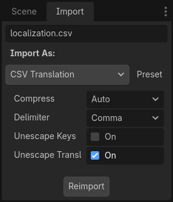

Bản địa hóa bằng bảng tính
Bảng tính là một trong những định dạng phổ biến nhất để bản địa hóa trò chơi. Trong Godot, bảng tính được hỗ trợ thông qua định dạng CSV. Hướng dẫn này giải thích cách làm việc với CSV.
Các file CSV phải được lưu với mã hóa UTF-8 không có byte order mark.
Cảnh báo
Theo mặc định, Microsoft Excel luôn lưu file CSV với mã hóa ANSI thay vì UTF-8. Không có cách tích hợp sẵn để làm điều này, nhưng có các cách khắc phục như mô tả tại đây.
Chúng tôi khuyên bạn nên dùng LibreOffice hoặc Google Sheets thay thế.
Định dạng
File CSV phải được định dạng như sau:
keys |
<lang1> |
<lang2> |
<langN> |
|---|---|---|---|
KEY1 |
string |
string |
string |
KEY2 |
string |
string |
string |
KEYN |
string |
string |
string |
Các thẻ "lang" phải đại diện cho một ngôn ngữ, thuộc một trong các locale hợp lệ mà engine hỗ trợ, hoặc phải bắt đầu bằng dấu gạch dưới (_), nghĩa là cột tương ứng được dùng làm chú thích và sẽ không được import. Các thẻ KEY phải là duy nhất và đại diện cho một chuỗi trên toàn cục. Theo quy ước, chúng thường được viết hoa để phân biệt với các chuỗi khác. Các key này sẽ được thay thế khi chạy bằng chuỗi đã dịch tương ứng. Lưu ý rằng chữ hoa/thường là quan trọng: KEY1 và Key1 sẽ là hai key khác nhau. Ô trên cùng bên trái bị bỏ qua và có thể để trống hoặc chứa bất kỳ nội dung nào. Đây là một ví dụ:
keys |
en |
es |
ja |
|---|---|---|---|
GREET |
Hello, friend! |
Hola, amigo! |
こんにちは |
ASK |
How are you? |
Cómo está? |
元気ですか |
BYE |
Goodbye |
Adiós |
さようなら |
QUOTE |
"Hello" said the man. |
"Hola" dijo el hombre. |
「こんにちは」男は言いました |
Ví dụ tương tự được trình bày dưới đây dưới dạng file văn bản thuần phân tách bằng dấu phẩy, vốn là kết quả của việc chỉnh sửa bảng trên trong một trình bảng tính. Khi chỉnh sửa phiên bản văn bản thuần, hãy nhớ đặt trong dấu ngoặc kép bất kỳ message nào chứa dấu phẩy, ngắt dòng hoặc dấu ngoặc kép, để dấu phẩy không bị phân tích thành dấu phân cách, ngắt dòng không tạo ra mục mới và dấu ngoặc kép không bị phân tích thành ký tự bao. Hãy nhớ escape mọi dấu ngoặc kép mà message có thể chứa bằng cách đặt thêm một dấu ngoặc kép phía trước. Ngoài ra, bạn có thể chọn một dấu phân cách khác thay cho dấu phẩy trong tùy chọn import.
keys,en,es,ja
GREET,"Hello, friend!","Hola, amigo!",こんにちは
ASK,How are you?,Cómo está?,元気ですか
BYE,Goodbye,Adiós,さようなら
QUOTE,"""Hello"" said the man.","""Hola"" dijo el hombre.",「こんにちは」男は言いました
Chỉ định dạng số nhiều
Kể từ Godot 4.6, bạn có thể chỉ định dạng số nhiều trong file CSV.
Việc này được thực hiện bằng cách thêm một cột tên ?plural ở bất kỳ đâu trong bảng (trừ cột đầu tiên, vốn dành cho các key dịch). Theo quy ước, nên đặt nó ở cột thứ hai. Lưu ý rằng trong ví dụ dưới đây, cột key chính là cột chứa bản địa hóa tiếng Anh.
en,?plural,fr,ru,ja,zh
?pluralrule,,nplurals=2; plural=(n >= 2);,,
There is %d apple,There are %d apples,Il y a %d pomme,Есть %d яблоко,リンゴが%d個あります,那里有%d个苹果
,,Il y a %d pommes,Есть %d яблока,,
,,,Есть %d яблок,,
Ghi chú
Dịch Control tự động không được hỗ trợ khi dùng dạng số nhiều. Bạn phải dịch chuỗi thủ công bằng tr_n().
Chỉ định ngữ cảnh dịch
Kể từ Godot 4.6, bạn có thể chỉ định ngữ cảnh dịch trong file CSV. Điều này có thể dùng để phân biệt các chuỗi nguồn giống hệt nhau nhưng mang nghĩa khác nhau. Dù thường không cần thiết khi dùng key dịch LIKE_THIS, nó hữu ích khi dùng văn bản tiếng Anh thuần làm key dịch.
Việc này được thực hiện bằng cách thêm một cột tên ?context ở bất kỳ đâu trong bảng (trừ cột đầu tiên, vốn dành cho các key dịch). Theo quy ước, nên đặt nó ở cột thứ hai, hoặc sau ?plural nếu cột đó cũng được dùng. Lưu ý rằng trong ví dụ dưới đây, cột key chính là cột chứa bản địa hóa tiếng Anh.
en,?context,fr,ru,ja,zh
Letter,Alphabet,Lettre,Буква,字母,字母
Letter,Message,Courrier,Письмо,手紙,信件
Trình import CSV
Theo mặc định, Godot sẽ coi các file CSV là bản dịch. Nó sẽ import chúng và tạo một hoặc nhiều file resource bản dịch đã nén bên cạnh.
Việc import cũng sẽ thêm bản dịch vào danh sách các bản dịch cần tải khi trò chơi chạy, được chỉ định trong project.godot (hoặc cài đặt dự án). Godot cũng cho phép tải và gỡ bỏ bản dịch khi đang chạy.
Chọn file .csv và mở dock Import để thiết lập các tùy chọn import. Bạn có thể bật/tắt việc nén các bản dịch được import, và chọn dấu phân cách dùng khi phân tích file CSV.

Hãy nhớ nhấp sau mỗi lần thay đổi các tùy chọn này.
Tải file CSV làm bản dịch
Sau khi file CSV được import, nó không tự động được đăng ký làm nguồn bản dịch cho dự án. Hãy nhớ làm theo các bước mô tả trong Cấu hình bản dịch đã import để bản dịch thực sự được dùng khi chạy dự án.